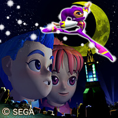

「スタジオＵＳＡ」現地の様子をレポート！
みなさんこんにちは！
「スタジオUSA」在勤の瀬上です。
僕たち「スタジオUSA」は、ずっとソニックの作品を手掛けてきたのは知っているよね。
先日、『ナイツ』の最新作が制作中であることが発表になったんだけど、実はスタジオUSAが作る、初めてのソニック以外のタイトルなんだよ。
今回のスタジオUSA通信では、そのナイツの最新作、『NiGHTS:Journey of Dreams（邦題未定）』に関して飯塚プロデューサーに、その意気込みを訊いてみよう！
ついに『ナイツ』最新作の制作が発表になりましたね。
そうですね。何年も前から、インタビューで『ナイツ』の質問をされるたびに 「いつか、続編を作りたい」と答えていましたから、社内で最新作の制作が決定した瞬間から、ファンの方には報告したい気持ちでいっぱいでした。
続編の登場を期待していてくださった皆さん、本当に長らくお待たせしました。
早いもので、オリジナルのセガサターン版が世に出てから10年以上経ちました。 このタイミングで、『ナイツ』の最新作を手掛けようと思った理由は何でしょう？
この11年間、常に続編を作るタイミングをうかがってきたわけですが、 今回それを決定した最大の要因は、”Wiiの登場”といえるかと思います。
Wiiリモコンを筆頭とした個性的なハードウェアの特徴ももちろんですが、 家族に楽しい時間を提供しようとするWiiの持つコンセプトが、 ナイツ復活の舞台として最適だったわけです。
飯塚さんはセガサターン版の『ナイツ』を手掛けていたとき以外は、 ずっとソニックタイトルに関わっていましたが、『ソニック アドベンチャー』のカジノポリス・ステージを作っていたときや、 『セガ・スーパースターズ』に収録されたナイツをプレイしたときには、「ナイツの続編を手掛けたい！」という思いがあったんじゃないですか？
もちろん、この11年間常にその想いはありましたし、またそれは他のスタッフも同じ気持ちだったと思います。
本当にたくさんのソニックタイトルに、こっそり 登場していましたからね、ナイツは。
『ソニック アドベンチャー2』の ラジカルハイウェイには、ナイツの頭の形をしたビルがあるんですよ。
読者の中には、上記のタイトルなどで、『ナイツ』という名前は知っていても、
実際には本編をプレイしたことが無いユーザーも多いと思うんです。
ファンタスティックで独創的な世界観や、その独特なプレイ感覚などが、
10年以上経った今でも特徴的なタイトルだと思いますが、前作を簡単に説明してもらえますか？

前作『ナイツ』 「走る爽快感」を生みだしたソニックに対して、「飛ぶ爽快感」をテーマにした
キャラクターを創りだそう！…というのが『ナイツ』の始まりでした。
アクションゲームの常識をすべて白紙に戻し、新たなペリフェラルまで用意して、 とにかく「気持ちよく飛ぶ」という新たなを体験を実現したのが『ナイツ』です。
冒険の舞台は、誰もが夜に訪れる「夢」の世界。悪夢に悩まさせる少年と少女が 夢の世界で出会ったナイツとともに悪夢に立ち向かい、その結果、心の成長を とげるというのがおおまかな前作のお話です。
その物語の題材となった”夢”ですが、取り上げたきっかけは何だったんでしょう？
夢分析なども、ゲームに反映されているそうですね？
まだ『ナイツ』の影も形もない開発初期の段階から、物語のなかで「成長による感動」を 描きたいっていう漠然とした構想があったんです。 その時、私たちが毎晩何気なくみている「夢」にも、自分自身を見つめ直し、人を成長させる力があることを知りました。
夢見る人の心が現れる夢の世界…そんな身近で魅力的な世界を実現するために、 前作では、主人公のエリオットとクラリスの心を夢分析して、それぞれのステージや ボスなどを構築していたんです。
なるほど、そういう夢分析は今回の最新作でもベースになっているんですか？
もちろんです。まだ、それ以上のことは話せませんが…（苦笑）。
『ナイツ』といえば、その音楽にも未だに根強いファンが多いですよね。
メインテーマの「Dreams Dreams」をはじめ、前作には個性的で魅力的な楽曲が多く、 それらもまた『ナイツ』を語る上で、欠かせないひとつの特徴と言えるでしょう。
なのでもちろん、今回の最新作でも、前作のサウンド担当であった幡谷と佐々木の両名が楽曲を担当します。 この日のために、11年間ラブコールを送り続けてましたから…（笑）。
前作ファンの皆さんには、この二人が創り出す新たなナイツサウンドにも大いに期待してもらいたいですね。
スタジオUSA通信なので、アメリカならではのアイテムに関しても触れたいんですが、 前作の際に『ソニック』同様、『ナイツ』のコミックスも発売されましたよね？
そうですね。アメリカでは『ソニック』と同じArchieコミックから、確か6冊ほど コミックが発売されました。
当時は、私たち開発がその内容まで監修することはなかったので、ゲームとはかなり設定の違うお話だったと思います。
それと、アメリカではナイツのLEDゲームなんかも売られていたんですよ。
日本では絵本など、他のタイトルではなかなか出来ない展開がありましたね。
そうですね。とくに絵本は、私たち開発が強く希望した商品のひとつで、かなり無理いって作ってもらいました。絵本の絵も、私たちで用意しましたし（苦笑）。
アクションゲームのキャラクター商品って、男の子向け玩具っていうイメージが強いかと思うんですが、『ナイツ』では、年齢や性別を超えて多くの人が親しめるような商品展開が、今回もできればいいですね。抱き枕とか（笑）。
そうですね。今回も色々と作れると良いですね。スタジオUSA通信でも取り上げることが出来るし。
では最後に、これを読んでいるファンの皆さんに一言お願いします。
ここはソニックファンのための「SONIC CHANNEL」なので、初めてナイツを知ったという人がほとんどじゃないかと思います。
『ナイツ』は、ソニックと同じ志から生まれたソニックチームブランドを代表するキャラクターのひとりです。
今冬に発売予定の最新作は、前作ファンはもちろん、初めて『ナイツ』に触れる人にも遊びやすい内容になっていますので、是非一度「空を飛ぶ爽快感」を体験してみてください。
ということで、今回のこのコーナーでは、ここでしか読めないプロデューサーの
生の声を皆さんにお届けしたんだけど、楽しんでくれたかな？
みんなで頑張っているので、期待して待っていてくださいね！
今回の「スタジオUSA通信」はここまで。
また次回も、アメリカならではの情報をお届けするのでお楽しみに！
 プロフィール：
プロフィール：
瀬上 純（せのうえ じゅん）
SEGAのサウンドクリエイター。
代表作は『ソニックアドベンチャー』シリーズ、
『ソニックヒーローズ』、『シャドウ・ザ・ヘッジホッグ』など。
最新作、『ソニックと暗黒の騎士』ではサウンドディレクターを務めた。
その他の参加作品には、『ナイツ ～星降る夜の物語～』、『プロ野球チームをつくろう！2』など。